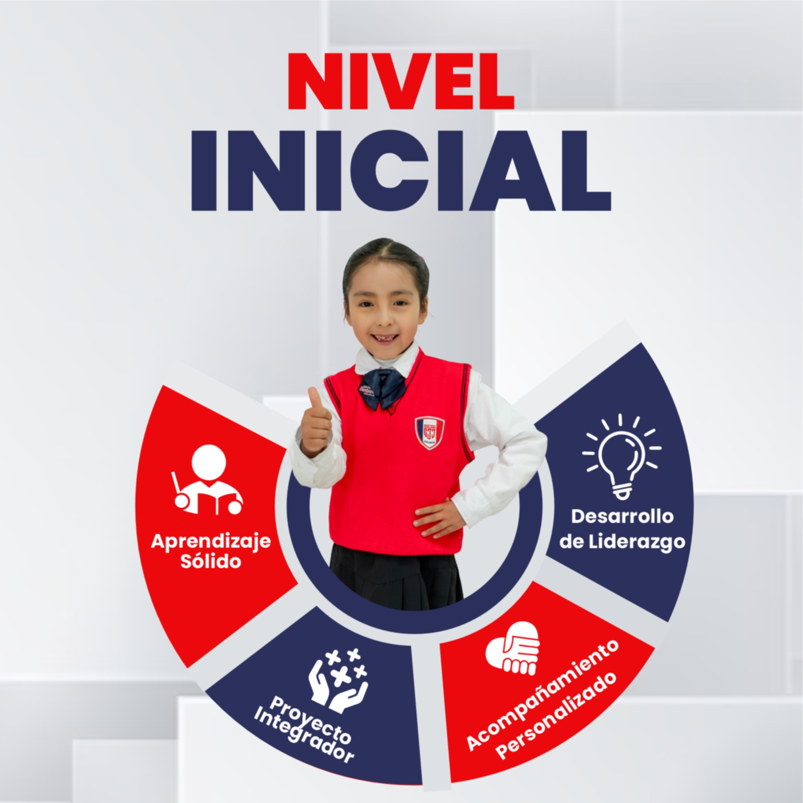
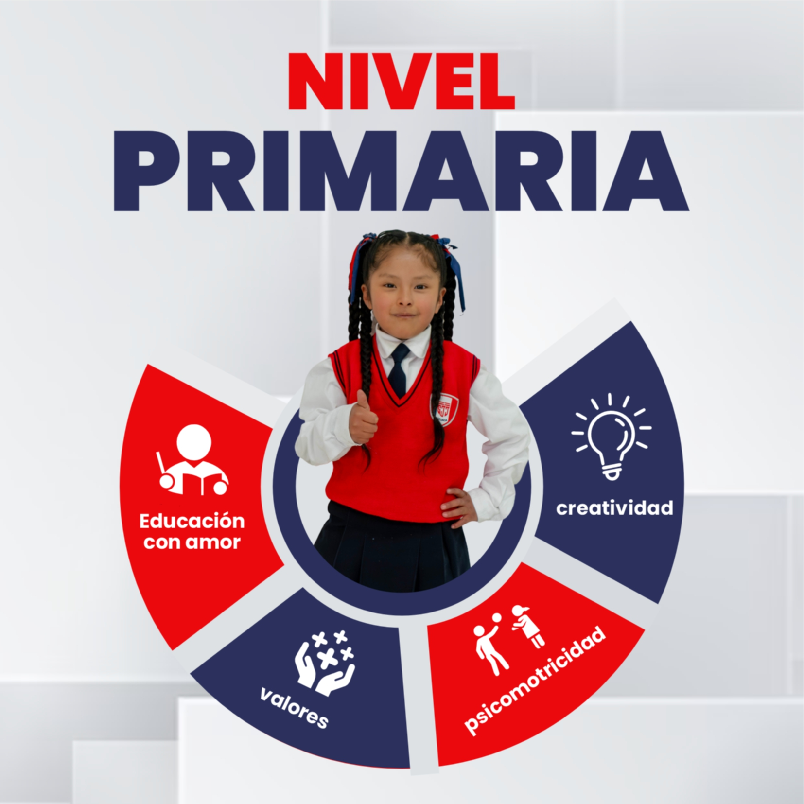
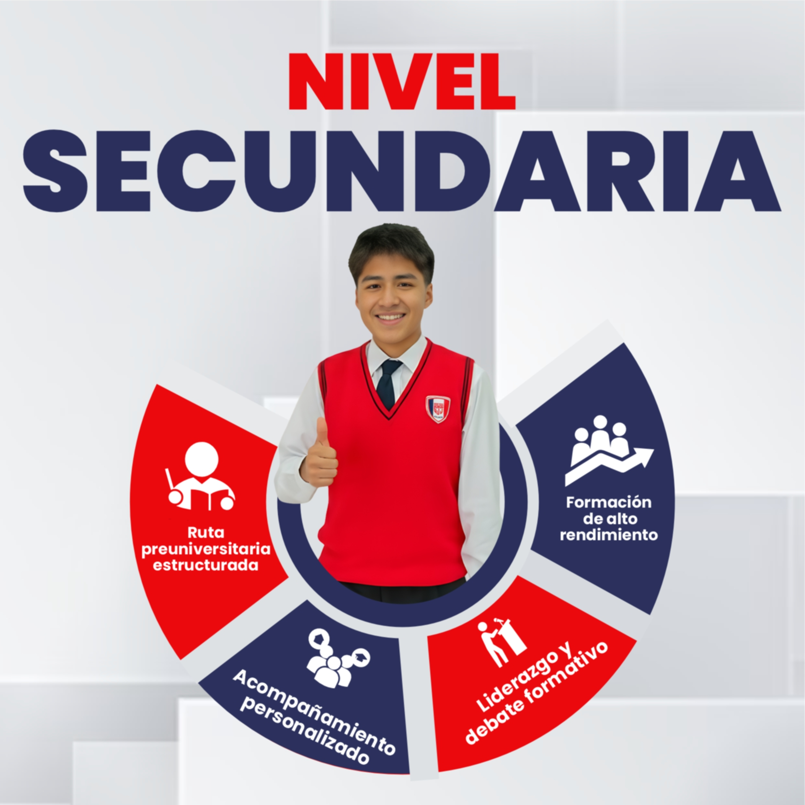

Formación integral desde los primeros pasos hasta la preparación universitaria.

El inicio de una gran aventura educativa. En San José, brindamos un ambiente seguro, cálido y estimulante donde los más pequeños desarrollan sus habilidades básicas mientras juegan y descubren el mundo.

Construcción de bases sólidas. En este nivel, potenciamos el pensamiento lógico, la comprensión lectora y la autonomía, integrando valores cristianos y cívicos en cada aprendizaje.

Preparación para el mundo y la universidad. Nos enfocamos en la excelencia académica, el liderazgo y la investigación, asegurando que nuestros egresados estén listos para los retos globales.